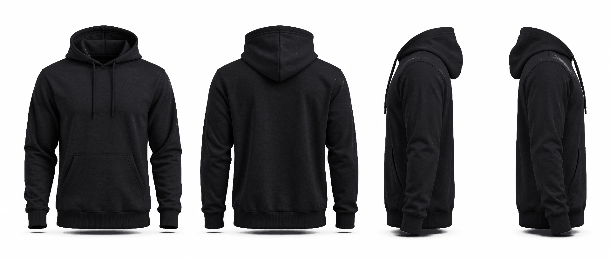

U3
Garra
Zarpazo de caracal y letra de brocha, sobre sudadera negra

UW
Ni un paso
atrás
WESTHILL
UNIVERSIDAD · EQUIPO
FRENTE
ESPALDA
PERFIL IZQUIERDO
PERFIL DERECHO
Frente:
zarpazo amarillo con UW al pecho izquierdo.
Espalda:
zarpazo grande, "Ni un paso atrás" en letra de brocha y WESTHILL.
Manga:
huella blanca.
Tintas:
2 (blanco y amarillo). Requiere sudadera negra.